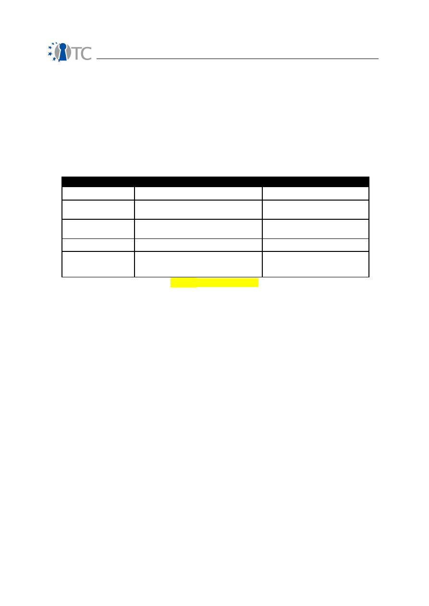
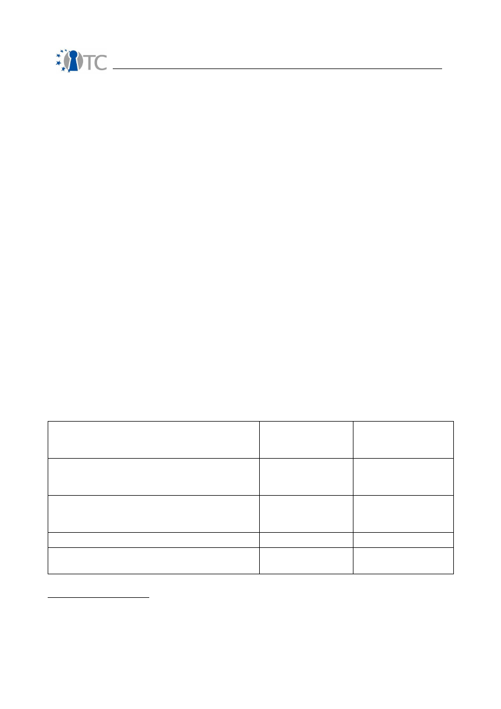

D07.3 V&V Report #3: Recommendations to
developers, Bugs and Fixes, Tools, Final
Methodology and Assessment on CC
Certification
Project number
IST-027635
Project acronym
Open_TC
Project title
Open Trusted Computing
Deliverable type
Report
Deliverable reference number
IST-027635/D07.03/1.0
Deliverable title
D07.3 V&V Report #3: Recommendations to
developers, Bugs and Fixes, Tools, Final
Methodology and Assessment on CC
Certification
WP contributing to the deliverable
WP07
Due date
Mar 2009 - M41
Actual submission date
29 May 2009
Responsible Organisation
CEA
Authors
Roman Drahtmüller, Ivan Evgeniev, Vesselin
Gueorguiev,
Pete Herzog, Zoltan Hornak,
Armand Puccetti, Laszlo Szekeres.
Abstract
This deliverable is the final report on the V&V
activities undertaken in WP07. This
document presents research and application
results. These deal with 1) the testing and
analysis of the WP07 targets, 2) tools, 3)
methodology improvements, and 4)
certifiability of the L4 target.
Keywords
Verification, validation, certification
Dissemination level
Public
D07.3 V&V Report #3: Recommendations to developers, Bugs and Fixes,
Tools, Final Methodology and Assessment on CC Certification
1.0
Revision
1.0
Instrument
IP
Start date of the
project
1
st
November 2005
Thematic Priority
IST
Duration
42 months
If you need further information, please visit our website
www.opentc.net
or contact
the coordinator:
Technikon Forschungs-und Planungsgesellschaft mbH
Richard-Wagner-Strasse 7, 9500 Villach, AUSTRIA
Tel.+43 4242 23355 –0
Fax. +43 4242 23355 –77
Email
coordination@opentc.net
The information in this document is provided “as is”, and no guarantee
or warranty is given that the information is fit for any particular purpose.
The user thereof uses the information at its sole risk and liability.
OpenTC Deliverable 07.03
2/47

D07.3 V&V Report #3: Recommendations to developers, Bugs and Fixes,
Tools, Final Methodology and Assessment on CC Certification
1.0
Table of Contents
1 Summary...................................................................................................................6
2 Introduction................................................................................................................7
2.1 Outline...................................................................................................................7
2.2 Targets analyses...................................................................................................7
2.3 Structure of this report..........................................................................................8
3 Final development of OSSTMM and security and trust measurements.......................9
3.1 Overview................................................................................................................9
3.2 Technical background............................................................................................9
3.3 Security Testing with OSSTMM.............................................................................10
3.4 Gap analysis from the OSSTMM..........................................................................13
3.5 Security Metrics...................................................................................................15
3.6 Trust Metrics .......................................................................................................18
4 Dynamic analysis of targets.....................................................................................21
4.1 Overview..............................................................................................................21
4.2 Technical background ..........................................................................................21
4.2 Testing of XEN....................................................................................................23
4.4 Testing of Trousers...............................................................................................24
4.4.2 Test results........................................................................................................25
4.3 Testing L4 Fiasco.................................................................................................25
5 Static analysis..........................................................................................................27
5.1 Overview..............................................................................................................27
5.2 Static Analysis of L4 using Coverity Prevent........................................................28
5.3 Static Analysis of OSLO using Frama-C................................................................29
5.4 Static Analysis of Vgallium...................................................................................29
5.5 Evolutions of the Frama-C toolkit.........................................................................30
5.6 Dissemination of Frama-C....................................................................................30
6 CC EAL5+ certification study and targets quality analysis.......................................34
6.1 Overview..............................................................................................................34
6.2 Technical background..........................................................................................34
6.3 Certification of L4.................................................................................................34
7 Conclusions and recommendations..........................................................................36
7.1 General conclusions.............................................................................................36
7.2 On the static analysis of Linux code.....................................................................36
7.3 On the dynamic analysis of Linux code................................................................39
7.4 On Trust Operations.............................................................................................40
8 References................................................................................................................42
9 List of Abbreviations.................................................................................................43
10 Appendix 1: Deliverable D07b.6: Static analysis of the Vgallium application using
Coverity Prevent and Frama-C......................................................................................45
11 Appendix 2: Deliverable D07a.5 - L4 FIASCO Final Report......................................46
12 Appendix 3: Deliverable D07a.4: Security testing of Trousers................................47
OpenTC Deliverable 07.03
3/47

D07.3 V&V Report #3: Recommendations to developers, Bugs and Fixes,
Tools, Final Methodology and Assessment on CC Certification
1.0
List of figures
Figure 1: Official Web site.............................................................................................32
OpenTC Deliverable 07.03
4/47

D07.3 V&V Report #3: Recommendations to developers, Bugs and Fixes,
Tools, Final Methodology and Assessment on CC Certification
1.0
List of Tables
Index of Tables
Table 1– Value Table....................................................................................................17
Table 2– Scores Table...................................................................................................41
Table 3– Abbreviations.................................................................................................44
OpenTC Deliverable 07.03
5/47

D07.3 V&V Report #3: Recommendations to developers, Bugs and Fixes,
Tools, Final Methodology and Assessment on CC Certification
1.0
1 Summary
OpenTC sets out to develop trusted and secure computing systems based on Trusted
Computing hardware and Open Source Software. This third V&V deliverable provides
the main results of WP07 of the the third project period (M25-M41) dealing with
support activities, i.e. methodology, testing, verification and certification preparation.
These results stem from various research directions, and are directly related to the OS
developments and their building blocks. The main results are the development of
testing and verification tools, their application to OS components and the definition of
an Open Source Security testing Methodology.
OpenTC Deliverable 07.03
6/47

D07.3 V&V Report #3: Recommendations to developers, Bugs and Fixes,
Tools, Final Methodology and Assessment on CC Certification
1.0
2 Introduction
This deliverable is the main output of WP07 for the third period, i.e. from November
2007 to April 2009. It describes the main results of that period as well as work in
progress of all partners of WP07, i.e. of BME, CEA, ISECOM, SUSE and TUS. In this
report we only present the research and development results for that period, but do
not address any project management issues, for which the reader is invited to open
the activity reports of the same period.
2.1 Outline
The main objectives of this WP is to evaluate the reliability and security of the OS code
issued by WP04 by means of extensive testing and static analysis, guided by an
proper methodology. The aim is to quantify the quality and safety of this OS code,
provide feedback to the developers of this code, and analyze the possibility to certify
(parts of) it at levels EAL5+.
Indeed, operating systems form a particular class of applications in terms of
development process and code that need particular adaptations in terms of
methodology, methods and tools. Starting from state of the art V&V techniques, we
studied how to analyze and test the OS code with a maximum of precision, and then
decided which tools were adequate for their analysis. During the second project year
we selected some more targets and performed the analysis of XEN and the TPM TSS.
The third year continued to analyse more applications, enhance the tools used for this
purpose and dissemination. We will therefore report on this work and terminate this
report with some conclusions about WP07's work.
2.2 Targets analyses
The WP07 activities provide support to the development activities of WP05 and WP06
and therefore has investigates which targets are important to address and support. It
was considered, since the beginning of the project, that stable components are to be
addressed first, followed by components developed along OPENTC. It was also
considered that components are to be considered from the bottom layers (close to the
hardware) to the upper layer (central OS components). Hardware components, such as
the TPM or CPU are out of the scope of this project, as we deal with software items
only.
During the first year we have considered that the virtualization layers, namely XEN
and L4/Fiasco, are quite stable and merit that we V&V them. Below these layers we
find BIOSs and boot loaders that are critical components too, but that are not always
open source. During the second year of the project we examined the TPM drivers of
IFX, namely the TSS, tested and analysed XEN. During the third period, we have
addressed the boot loader OSLO, the Trousers TPM drivers, L4 Fiasco and the Vgallium
graphics driver. The later is new code being developed during the last six months of
the project.
We produced integrated reports on the analysis and testing of XEN, L4 Fiasco and
Vgallium, in order to assemble and integrate properly all WP07 partners results on
these targets.
OpenTC Deliverable 07.03
7/47
D07.3 V&V Report #3: Recommendations to developers, Bugs and Fixes,
Tools, Final Methodology and Assessment on CC Certification
1.0
2.3 Structure of this report
This report is structured along the technical research areas, presenting each one in
details and giving the reader an insight into the techniques and application results.
Several appendices are added to this report, in particular the detailed results of the
case studies done during the last year. These are added here for reference and in
order to simplify the main body of this report. They can be skipped in a first reading.
Each research task will be described, whenever possible, using the same model,
follows:
•
Overview of the task and description of its aims and relationship with the
original plans of WP07 and its SWP. This introduces the task and binds it to
the first workplan (see annex 1 of the OpenTC contract).
•
Technical background: this contains basic technical elements for the reader to
understand the results. Indeed, some tasks are quite new, and some
material is given for the reader to understand where the progress lies.
•
A detailed description of the research done, with the main results achieved: this
is the core part, which highlights the technical results.
•
Conclusions and open issues.
OpenTC Deliverable 07.03
8/47

D07.3 V&V Report #3: Recommendations to developers, Bugs and Fixes,
Tools, Final Methodology and Assessment on CC Certification
1.0
3 Final development of OSSTMM and security and
trust measurements
3.1 Overview
Security verification used to require a cross-disciplinary specialist who understood security as
deeply as they understood the rules, laws, underlying premise, operation, process, and
technology involved. Sometime later, third party verification came from the popular notion of
builder blindness that says those closest to the target will generally and usually involuntarily
miss the most problems. This became the standard procedure for a while and is still widely
regarded as true even though it actually means that an outsider with less knowledge of the
target is supposedly more capable of understanding that target than the operator. At some
point, the pendulum began to swing back the other way. Whether this happened for either
efficiency or economic reasons is unclear, but it has brought about an important shift to
provide the operators with security testing ability. It has led to simplified frameworks,
software, checklists, toolkits, and many other ways to make security testing easy enough that
anyone can do it. That's a good thing.
Unfortunately, there is no complex subject for which the simplification process is not itself
complex nor the end result significantly less than the whole. This means that to make a
security testing solution simple enough for non-experts to execute, the solution requires a
complex back-end to collect the data according to preconceived rules. This assumes that
operations always run according to design and configuration. It also assumes the solution
developer has taken into account all the possibilities for where, what, and how data can be
gathered. Furthermore it assumes that the data gathered can be properly sorted into a
uniform format for comparison and rule-based analysis. None of those tasks are simple.
Assuming that can be done, it would still require an exhaustive database of possibilities for the
numerous representations of security and layers of controls to deduce security problems. While
minimizing false positives through correlations based on the rules, laws, underlying premise,
operation, process, and technology involved. This solution could then be able to provide a
clear, concise report and metric. This solution would need to have more than just the
framework, software, checklist, or toolkit which it produces; it would need a methodology.
A security methodology is not a simple thing. It is the back-end of a process or solution which
defines what or who is tested as well as when and where. It must take a complex process and
reduce it into elemental processes and sufficiently explain the components of those processes.
Then the methodology must explain the tests for verifying what those elemental processes are
doing while they are doing, moving, and changing. Finally, the methodology must contain
metrics both to assure the methodology has been carried out correctly and to comprehend or
grade the result of applying the methodology. So, making a security testing methodology is no
small feat.
3.2 Technical background
ISECOM has spent the last 3 and a half years researching and rewriting the OSSTMM
from a best practice security testing document to a factual security testing and
analysis document. This final year, we have included a specific section on proper and
practical security analysis which is the result of best practices, studies, and theory
being verified and concentrated into a pragmatic, usable practice. This has also been
done for Trust, Metrics, and a security testing methodology that follows the scientific
method.
As part of the testing process in OpenTC, ISECOM researched new security testing
OpenTC Deliverable 07.03
9/47

D07.3 V&V Report #3: Recommendations to developers, Bugs and Fixes,
Tools, Final Methodology and Assessment on CC Certification
1.0
methods for the Open Source Security Testing Methodology Manual (OSSTMM) to be
applied which also included quantifiable, unbiased, security metrics, a better
understanding of trust also to be applied to trusted computing, a means for the
rational quantification of trust as a metric, and a means for applying the security
metrics to static source code to verify changes in complexity as they pertain to
security.
ISECOM's research into operational security required finding the smallest, logical
components of security and how they relate to become a concrete thing known as
security, uncorrupted by bias as the use of risk can be. The findings of these specific
security components have allowed for improved applications in operational security.
The main finding is the Risk Assessment Values (RAV), a concrete security metric
which measures the attack surface of any scope and can serve as the basis of a better
risk assessment. Another finding is the source code analysis risk evaluation (SCARE)
for applying the RAV to source code. Additionally, the work in trust clarified the
definition from one regarding integrity and fallacious requirements to one which is
logical and obtainable.
3.3 Security Testing with OSSTMM
An OSSTMM security test begins with its definition. These 7 steps will take you to the start of a
properly defined security test.
1. Define what you want to secure. These are the assets. The protection mechanisms for
these assets are the targets you will test.
2. Identify the area around the assets which includes the protection mechanisms and the
processes or services built around the assets. This is where interaction with assets will
take place. This is your engagement zone.
3. Define everything outside the engagement zone that you need to keep your assets
operational. This may include things you may not be able to directly influence like
electricity, food, water, air, stable ground, information, legislation, regulations and
things you may be able to work with like dryness, warmth, coolness, clarity, contractors,
colleagues, branding, partnerships, and so on. Also count that which keeps the
infrastructure operational like processes, protocols, and continued resources. This is
your test scope.
4. Define how your scope interacts within itself and with the outside. Logically
compartmentalize the assets within the scope through the direction of interactions such
as inside to outside, outside to inside, inside to inside, department A to department B,
etc. These are your vectors. Each vector should ideally be a separate test to keep each
compartmentalized test duration short before too much change can occur within the
environment.
5. Identify what equipment will be needed for each test. Inside each vector, interactions
may occur on various levels. These levels may be classified in many ways, however
here they have been classified by function as five channels. The channels are Human,
Physical, Wireless Communications, Telecommunications, and Data Networks. Each
channel must be separately tested for each vector.
6. Determine what information you want to learn from the test. Will you be testing
interactions with the assets or also the response from active security measures? The
test type must be individually defined for each test, however there are six common
types identified here as Blind, Double Blind, Gray Box, Double Gray Box, Tandem, and
Reversal.
7. Assure the security test you have defined is in compliance to the Rules of Engagement,
a guideline to assure the process for a proper security test without creating
misunderstandings, misconceptions, or false expectations.
OpenTC Deliverable 07.03
10/47

D07.3 V&V Report #3: Recommendations to developers, Bugs and Fixes,
Tools, Final Methodology and Assessment on CC Certification
1.0
Once the test is properly defined, the operational security (OPSEC) testing process can
begin. The OPSEC testing process is a discrete event test of a dynamic, stochastic
system. This means that you will be making a chronological sequence of tests on a
system that changes and does not always give the same output for the input
provided. The target is a system, a collection of interacting and co-dependent
processes which is also influenced by the stochastic environment it exists in. Being
stochastic means the behavior of events in a system cannot be determined because
the next environmental state can only be partially but not fully determined by the
previous state. The system contains a finite but possibly extremely large number of
variables and each change in variables may present an event and a change in state.
Since the environment is stochastic, there is an element of randomness and there is
no means for predetermining with certainty how all the variables will affect the system
state.
Most of what people understand of OPSEC comes from the defensive aspect which is
understandable since security is generally considered a defensive strategy. Aggressive
testing of OPSEC is then relegated to the same class as the exploitation and
circumvention of the current design or configuration. However, the fundamental
problem with this technique is that a design or configuration does not equate to
operation.
We have many instances in life where operation does not conform to configuration. A
simple example is a typical job description. It is more common than not that the
policy which dictates one's job, also known as a job description, falls short from
actually reflecting what we do on the job. Another example is the TV channel.
Because a channel is set to a particular frequency (configured) it does not mean we
will receive the show broadcast on that channel or only that show.
This security testing methodology is designed on the principle of verifying the security
of operations. While it may not always test processes and policy directly, a successful
test of operations will allow for analysis of both direct and indirect data to study the
gap between operations and processes. This will show the size of the rift between
what management expects of operations from the processes they developed and what
is really happening. More simply put, the Analyst's goal is to answer: “how do current
operations work and how do they work differently from how management thinks they
work”?
A point of note is the extensive research available on change control for processes to
limit the amount of indeterminable events in a stochastic system. The Analyst will
often attempt to exceed the constraints of change control and present “what if”
scenarios which the change control implementors may not have considered. A
thorough understanding of change control is essential for any Analyst.
An operational security test therefore requires thorough understanding of the testing
process, choosing the correct type of test, recognizing the test channels and vectors,
defining the scope according to the correct index, and applying the methodology
properly.
Strangely, nowhere, besides in security testing is the echo process considered the
defacto test. Like yelling into a cavernous area and awaiting the response, the echo
process requires agitating and then monitoring emanations from the target for
OpenTC Deliverable 07.03
11/47

D07.3 V&V Report #3: Recommendations to developers, Bugs and Fixes,
Tools, Final Methodology and Assessment on CC Certification
1.0
indicators o
f a particular state such as secure or insecure, vulnerable or protected, on or off,
and left or right. The echo process is of a cause and effect type of verification. The Analyst
makes the cause and analyzes the effect on the target. It is strange that this is the primary
means of testing something as critical as security because although it
makes for a very fast
test, it is also highly prone to errors, some of which may be devastating to the target.
Consider that in a security test using the echo process, a target that does not respond
is considered secure. Following that logic, a target needs only to be non-interactive to
give the appearance of security.
If hospitals used the echo process to determine the health of an individual, it would
rarely help people, but at least the waiting room time would be very short. Hospitals
however, like most other scientific industries, apply the Four Point Process which
includes a function of the echo process called the “interaction” as one of the four
tests. The other three tests are: the “inquest” of reading emanations from the patient
such as pulse, blood pressure, and brain waves; the “intervention” of changing and
stressing operating conditions such as the patient's homeostasis, behavior, routine, or
comfort level; and the “induction” of examining the environment and how it may have
affected the target such analyzing what the patient has interacted with, touched,
eaten, drank, or breathed in. However, in security testing, the majority of tests are
based on the echo process alone. There is so much information lost in such one-
dimensional testing we should be thankful that the health care industry has evolved
past just the “Does it hurt if I do this?” manner of diagnosis.
The security test process in this methodology does not recommend the echo process
alone for reliable results. While the echo process may be used for certain, particular
tests where the error margin is small and the increased efficiency allows for time to be
moved to other time-intensive techniques, it is not recommended for tests outside of a
deterministic environment. The Analyst must choose carefully when and under what
conditions to apply the echo process.
While many testing processes exist, the Four Point Process for security testing is
designed for optimum efficiency, accuracy, and thoroughness to assure test validity
and minimize errors in uncontrolled and stochastic environments. It is optimized for
real-world test scenarios outside of the lab. While it also uses agitation, it differs from
the echo process in that it allows for determining more than one cause per effect and
more than one effect per cause.
The 4PP breaks down a test from start to conclusion. These are things that an
experienced testing group already does. Don't confuse the formality in the dissection
of the process with the formality of the reporting. You don't have to show every step
being done but you should understand how you got from A to C. I explain it to people
like giving people driving directions. You tell them the steps on where they turn and
relative proximities to things that they will see to know they are going the right way
but you don't tell them every street they drive down and every traffic signal they must
obey to get to the end. Well, the 4PP is the specific directions and the means and
reporting is actually the relativistic ones.
1.
Induction:
establishing principle truths about the target from environmental
laws and facts.
The Analyst determines factual principles regarding the target from the
environment where the target resides. As the target will be influenced by its
environment, its behavior will be determinable within this influence. Where the target is
OpenTC Deliverable 07.03
12/47

D07.3 V&V Report #3: Recommendations to developers, Bugs and Fixes,
Tools, Final Methodology and Assessment on CC Certification
1.0
not influenced by its environment, there exists an anomaly to be understood.
2.
Inquest:
investigating target emanations. The Analyst investigates the
emanations from the target and any tracks or indicators of those emanations. A
system or process will generally leave a signature of its existence through
interactions with its environment.
3.
Interaction:
like
echo tests, standard and non-standard interactions with the
target to trigger responses. The Analyst will inquire or agitate the target to
trigger responses for analysis.
4.
Intervention:
changing resource interactions with the target or between
targets. The Analyst will intervene with the resources the target requires from
its environment or from its interactions with other targets to understand the
extremes under which it can continue operating adequately.
An analysis according to the OSSTMM will require that the full 4 Point Process security
tests are completed thoroughly. It will not be possible to follow the full methodology
with just the Interaction tests.
3.4 Gap analysis from the OSSTMM
This security testing methodology has a solid base which may seem quite involved,
but it is actually simple in practice. It is designed as a flowchart; however, unlike the
standard flowchart, the flow, represented by the arrows, may go backward as well as
forward. In this way, it is more integrated and while the beginning and the end are
clear, the audit has greater flexibility. The Analyst creates a unique path through the
methodology based on the target, the type of test, the time allotted for the audit, and
the resources applied to the test. For an orchestra, the composer writes the sheet
music to designate the order and duration of notes, but only the conductor can control
the execution of the performance. This methodology is like the sheet music,
designating the necessary tests, but the Analyst controls the order, the duration, as
well as the execution. The main reason for requiring this level of flexibility in the
OSSTMM is because no methodology can accurately presume the justifications for the
operations of channel gateways in a target and their adequate level of security. More
directly, this methodology cannot presume a best practice for conducting all audits, as
best practice is based on a specific configuration of operations.
Best practice, is only best for some -- generally the originator of the practice.
Operations dictate how services should be offered, and those services dictate the
requirements for operational security. Therefore, a methodology that is invoked
differently for each audit and by each Analyst can still have the same end result if the
Analyst completes the methodology. For this reason, one of the foundations of the
OSSTMM is to record precisely what was not tested. By comparing what was tested
and the depth of the testing with other tests, it is possible to measure operational
security (OPSEC) based on the test results.
Applying this methodology will therefore meet the Analyst's goal to answer the
following three questions which make up the
Trifecta
, the answer to OPSEC needs.
OpenTC Deliverable 07.03
13/47

D07.3 V&V Report #3: Recommendations to developers, Bugs and Fixes,
Tools, Final Methodology and Assessment on CC Certification
1.0
1. How do current operations work?
The derived metrics can be applied to determine the problem areas within the scope
and which problems must be addressed. The metrics in this methodology are
designed to map the problems in different ways so as to show if the problem is a
general one or more specific, like an overlook or a mistake.
2. How do they work differently from how management thinks they
work?
Access to policies or a risk assessment will map back to the different categories of the
metrics. The categories provide the current state values where a comparison can be
made with both an optimum state according to the policies and one according to
assessed threats.
3. How do they need to work?
Where the metrics show no gap between policy or risk assessment's optimum values
yet the security test shows that there is indeed a protection problem regardless of
controls as implemented in policy, it is possible to clearly denote a problem. Often,
without even mapping to policy, a discrepancy between the implemented controls and
the loss of protection is simply evident.
The Trifecta combined with the four point process provide a substantially thorough
application of this methodology. The steps in this application can be summarized as
follows:
1. Passively collect data of normal operations to comprehend the target.
2. Actively test operations by agitating operations beyond the normal baseline.
3. Analyze data received directly from the operations tested.
4. Analyze indirect data from resources and operators (i.e. workers, programs).
5. Correlate and reconcile intelligence from direct (step 3) and indirect (step 4)
data test results to determine operational security processes.
6. Determine and reconcile errors.
7. Derive metrics from both normal and agitated operations.
8. Correlate and reconcile intelligence between normal and agitated (steps 1 and
2) operations to determine the optimal level of protection and control which
would best be implemented.
9. Map the optimal state of operations (step 8) to processes (step 5).
10. Create a gap analysis to determine what enhancements are needed for processes
governing necessary protection and controls (step 5) to achieve the optimal operational
state (step 8) from the current one.
Finally, the test will show an actual measurement of security and controls. Misrepresentation
of results in reporting may lead to fraudulent verification of security controls, and an
inaccurate security level. For this, the Analyst must accept responsibility and limited liability
for inaccurate reporting and be sure that following are provided with each report:
•
Date and time of test
•
Duration of test
OpenTC Deliverable 07.03
14/47

D07.3 V&V Report #3: Recommendations to developers, Bugs and Fixes,
Tools, Final Methodology and Assessment on CC Certification
1.0
•
Names of responsible Analysts
•
Test type
•
Scope of test
•
Index (method of target enumeration)
•
Channel tested
•
Test Vector
•
Verified test and metrics calculations
•
Which tests have been completed, not completed, or only partially completed, and to
what extent
•
Any issues regarding the test and the validity of the results
•
Any processes which influence the security limitations
•
Any unknowns or anomalies
3.5 Security Metrics
The Risk Assessment Values (RAV) are security metrics and require a security test in
order to have the right things counted and the right operations analyzed. Any security
test can be used but the more thorough and accurate the test the more the conclusive
the results will be. The RAV was originally designed for operations tests, like the
OSSTMM, where the auditor focuses on the behavior of the target rather than the
configuration. However, experiments show it is possible to apply the RAV to non
operational tests as well like static code analysis to determine the level of software
security complexity as well as physical security checklist audits to determine the level
of protection a physical space will provide.
The minimum RAV is made by the calculation of porosity which are the holes in the
scope. The problem with security metrics is generally in the determination of the
assessors to count what they can't possibly really know. This problem does not exist
in the RAV. You get what you know from what is there for that vector and you make
no assumptions from what is not there. You count all that which is visible and
interactive outside of the scope and allows for unauthenticated interaction between
other targets in the scope. That becomes the porosity. This porosity value makes the
first of 3 parts of the final RAV value. The next part is to account for the controls in
place per target. This means going target by target and determining where any of
the 10 controls are in place such as Authentication, Subjugation, Non-repudiation, etc.
Each control is valued as 10% of a pore since each provides 1/10
th
of the total controls
needed to prevent all attack types. This is because having all 10 controls for each
pore is functionally the same as closing the pore provided the controls have no
limitations. The third part of the RAV is accounting for the limitations found in the
protection and the controls. These are also known as “vulnerabilities”. The value of
these limitations comes from the porosity and established controls themselves. With
all counts completed, the RAV is basically subtracting porosity and limitations from the
controls. This is most easily done with the RAV spreadsheet calculator.
Unfortunately, an unskilled analyst can provide the wrong information which will
translate into a bad RAV. This is a possibility, just like it's possible a carpenter doesn't
measure a board right or a mechanic fails to read the gages right. The world is full of
what-if scenarios. Therefore the RAV is designed to be minimally influenced by bad
auditing or cheating by eliminating the direct scope size from the metric calculation.
However, no metric can be immune from fudging and the only way to assure the most
accurate RAV is to have multiple tests over time to make the counts and to be sure
the auditor will take responsibility over the accuracy of the test.
OpenTC Deliverable 07.03
15/47

D07.3 V&V Report #3: Recommendations to developers, Bugs and Fixes,
Tools, Final Methodology and Assessment on CC Certification
1.0
The end result is a calculation for Actual Security. It uses Log10 to reduce large
numbers into human-manageable form. People generally like to work with smaller
numbers and especially as percentages which are easier to visualize. For a small
scope, the accuracy of using Log10 as a reduction technique is negligible. However, if
you have a very large scope with many targets you may want to work with the very
large numbers for greater accuracy.
The RAV equation requires that each of the categories be assigned a logarithmic base
value to scale the three factors of Actual Security in accordance with the scope.
Operational Security also known as the scope’s Porosity is the first of the three RAV
factors that should be determined. It is initially measured as the sum of the scope’s
visibility, access and trust (
sum
OpSec
).
When we want to calculate the Risk Assessment Value it is however necessary to
determine the Operational Security base value,
base
OpSec
. The Operational Security
base value is given by the equation
base
OpSec
(
)
(
)
(
)
2
100
1
10
log
×
+
×
=
sum
OpSec
.
The next step in calculating the RAV is to define the Loss Controls; the security
mechanisms put in place to protect the operations. First the sum of the Loss Controls,
sum
LC
, must be determined by adding together the 10 Loss Control categories. Now,
the Controls base value can be calculated as
base
LC
(
)
(
)
(
)
2
10
1
10
log
×
+
×
=
sum
LC
.
The
sum
LC
is multiplied by 10 here as opposed to 100 in the Operational Security
equation to account for the fact that all 10 Loss Controls are necessary to fully protect
1 visibility, access or trust. Given that the combination of the 10 Loss Controls
combined balance the value of 1 OPSEC loss (visibility, access, trust) it is necessary to
determine the amount of Missing Controls,
sum
MC
, in order to assess the value of the
Security Limitations. This must be done individually for each of the 10 Loss Control
categories. For example, to determine the Missing Controls for Authentication (
Auth
MC
)
we must subtract the sum of Authentication Controls (
sum
Auth
) of the scope from the
sum
OpSec
. The Missing Controls can never be less than zero however.
The equation for determining the Missing Controls for Authentication (
Auth
MC
) is given
by
Auth
MC
=
sum
OpSec
-
sum
Auth
.
If
sum
OpSec
-
0
≤
sum
Auth
then
0
≈
Auth
MC
.
The resulting Missing Control totals for each of the 10 Loss Controls must then be
OpenTC Deliverable 07.03
16/47

D07.3 V&V Report #3: Recommendations to developers, Bugs and Fixes,
Tools, Final Methodology and Assessment on CC Certification
1.0
added to arrive at the total Missing Control value (
sum
MC
).
Next, the Security Limitations are individually weighted. The weighting of the
Vulnerabilities, Weaknesses and Concerns are based on a relationship between the
Porosity or
sum
OpSec
and the Loss Controls.
The following value table is used to calculate the
sum
SecLim
variable, as
an intermediate step between the Security Limitation inputs and the
base
SecLim
variable, which is the Security Limitations basic input for the RAV equation.
Input
Weighted Value
Variables
Vulnerability
(
)
(
)
1
10
10
log
+
+
+
sum
sum
MC
OpSec
sum
MC
: sum of Missing Controls
Weakness
(
)
(
)
1
10
10
log
+
+
+
A
sum
MC
OpSec
A
MC
: sum of Missing Controls
in Control Class A
Concern
(
)
(
)
1
10
10
log
+
+
+
B
sum
MC
OpSec
B
MC
: sum of Missing Controls
in Control Class B
Exposure
(
)
(
)
1
10
10
log
+
+
V
V
: sum of Visibility
Anomaly
(
)
(
)
1
10
10
log
+
+
+
MCa
V
V
: sum of Visibility
A
MC
: sum
of Missing Controls in Control
Class A
Table
1
– Value Table
sum
SecLim
is then calculated as the aggregated total of each input multiplied by its
corresponding weighted value as defined in the table above. The Security Limitations
base equation is given as:
base
SecLim
(
)
(
)
(
)
2
100
1
10
log
×
+
×
=
sum
SecLim
The Actual Delta is useful for comparing products and solutions by previously
estimating the change (delta) the product or solution would make in the scope. We
can find the Actual Security Delta,
∆
ActSec
, with the formula:
base
base
base
SecLim
OpSec
LC
ActSec
−
−
=
∆
.
To measure the current state of operations with applied controls and discovered
limitations, a final calculation is required to define Actual Security. As implied by its
name this is the whole security value which combines the three values of operational
security, controls, and limitations to show the actual state of security.
Actual Security (total),
ActSec
, is the true state of security provided as a hash of all
three sections and represented in a percentage where 100% represents a balance of
controls for interaction points to assets with no limitations. The final RAV equation for
Actual Security is given as:
OpenTC Deliverable 07.03
17/47

D07.3 V&V Report #3: Recommendations to developers, Bugs and Fixes,
Tools, Final Methodology and Assessment on CC Certification
1.0
(
)
( (
) (
) )
((
) (
) )
01
.
100
01
.
100
100
×
×
+
−
−
×
×
−
+
−
=
base
base
base
base
base
base
SecLim
LC
OpSec
LC
OpSec
OpSec
ActSec
3.6 Trust Metrics
Of the parts of Operational Security, Trust is more complicated than Access is verify
and measure. Visibility, the other of the three components, is simply verifying
opportunity. However, Trust, like Access is about interactions except trust interactions
aren't the kind that the Analyst may be able to directly verify. Since the interaction
isn't between the Analyst and the target but rather between targets within the scope
it's basically verification without vector.
Most people don't use trust so abstractly though. Trust is usually applied to a specific
person or item and a specific act such as, “Can I trust this employee to deliver before
deadline?” or “Can I trust this computer?”. There are correct answers for these
questions but we often lack the skills needed to quantify the level of trust for that
person or object which would let us make a more rational and logical decision.
However, to quantify trust, we need to first understand it.
Trust is a decision. While some people claim it is an emotion, like love, or a feeling,
like pain, its clearly a complex quality we humans are born with. Unlike an emotion or
a feeling, we can choose to trust or not to trust someone or something even if it feels
wrong to do so. It appears that we are capable to rationalize in a way to supersede
how we feel about trust. This means we can quantify it by applying a logical process. It
also means we can assign trust values to objects and processes as well as people
based on these values. This brings new power to those who can analyze trust and
make decisions based on that analysis. It also means Analysts with this skill can better
control bias, identify fallacies, especially those from authoritative or trusted sources,
and handle unknowns for transparent reporting.
As part of OPSEC, trust is one part of a target's porosity. Where security is like a wall
that separates threats from assets, trust is a hole in that wall. It is wherever the target
accepts interaction from other targets within the scope. However, people tend to use
improper or incomplete operational controls with their trusts like authentication that
has been made with improper identification such as a voice over a telephone, a
business card, or even just the assumption that because a person is here that they
belong here. This causes mistakes and opens them up to fraud and deceit. The use of
additional controls are required to secure a trust once decided.
Rationalizing trust in the unknown requires that we examine first the properties which
will lead us to trust that person or thing. Operational trust is thus obtainable
quantitatively through the calculation of those trust properties.
The Trust Properties are the quantifiable, objective elements which are used to create
trust.
1.
Size
: the number to be trusted. Must the trust extend to just one or to a whole
OpenTC Deliverable 07.03
18/47

D07.3 V&V Report #3: Recommendations to developers, Bugs and Fixes,
Tools, Final Methodology and Assessment on CC Certification
1.0
group or include a chain of other trusted people or objects? Less to trust means
less that can disappoint.
2.
Symmetry of trust:
the vector (direction) of the trust. Trust may be one way
(asymmetrical) and defined as to which way the trust must travel or both ways
(symmetrical). A person who must also trust you has to consider the
reciprocation from breaking the trust.
3.
Transparency:
the level of visibility of all operational parts and processes of the
target and its environment.
4.
Control:
the amount and direction of influence over the scope by the operator(s)
(also known as subjugation).
5.
Consistency:
integrity over time. The search for historical evidence of
compromise or corruption.
6.
Integrity:
the amount and timely notice of change within the target.
7.
Offsets of sufficient assurance:
compensation or punishment for failure. The
comparison of the value placed within the target to the value of compensation
to the operator or punishment to the target should the trust fail.
8.
Value of reward:
financial offset for risk. The amount of gain for which the risk of
putting trust in the target is sufficient to offset the risk of failure in the trust.
9.
Components:
the amount of influences over the target prior to its current state.
The more influential interactions the person or object of the trust has had, the
greater the likelihood malicious players have corrupted the person or object
making it untrustable.
10.
Operational security:
adequacy of security, controls, and limitations. The
amount and effectiveness of protection levels which tell the actual state of the
target's security.
Rational decision-making where it pertains to trust often does not include security
because it is mistakenly confused for risk and is therefore satisfied by rule no. 8.
However an OSSTMM security test can create a metric of a system's attack surface
both inside and out. The attack surface is the attacker's way of seeing the exposed
limitations in a system for exploitation. A self-confident system would have no attack
surface. An additional tool, like the Source Code Analysis Risk Evaluation (SCARE),
may also be used for calculating the attack surface of computer source code in areas
where the hardware or software make operational security testing infeasible or
impossible [5]. SCARE has been developed within OpenTC and initially used to track
attack surface changes to Xen source code and vGallium during development releases
and will further be applied to other code towards determining system self-confidence.
When creating the trust rules from the trust properties for quantification it is important
to note that trust decisions are not linear. There is no building towards trust in a
particular order or even an effort value system where it can be determined that one
level requires more effort than another. In methodology terms, it appears irrational
when calculated. A decision to trust therefore may be concluded by an answer from
just one of the following questions which make up the trust rules. The trust rules are
the rules for creating quantifiable, operational trust tests which must be created for
each type of target and by target, we refer to people, processes, or objects.
1.
Determine how many targets are in the scope and how they are to be
differentiated from each other (indexed).
2.
Determine the trust symmetry for each target.
3.
Determine the transparency of the target's components, operations, and
OpenTC Deliverable 07.03
19/47

D07.3 V&V Report #3: Recommendations to developers, Bugs and Fixes,
Tools, Final Methodology and Assessment on CC Certification
1.0
motives.
4.
Determine which targets are under the control of self or a trusted person.
5.
Determine the frequency and length of time for which the target's integrity is
corrupted.
6.
Determine the number of the target's components, operations, and motives
which have their integrity verified and the frequency of that verification.
7.
Determine the combined value of offsets of sufficient assurance (insurance or
leverage) such as reprisals, liens, or harmful penalties against the target.
8.
Determine the value gained from interaction with the target.
9.
Determine the number of influences the target has interacted with since its
inception.
10.
Determine the value of the security measures and controls (safety) subtracting
the known limitations (see the OSSTMM for the calculation of this RAV metric).
OpenTC Deliverable 07.03
20/47

D07.3 V&V Report #3: Recommendations to developers, Bugs and Fixes,
Tools, Final Methodology and Assessment on CC Certification
1.0
4 Dynamic analysis of targets
4.1 Overview
As part of the general V&V efforts of WP7 in OpenTC, BME took on to carry out security
evaluations, mainly dynamic analysis, i.e. security testing on selected modules of
OpenTC. For this purpose a separate sub-workpackage, SWP07a was devoted. The
main goal was to create test results in a systematic way, which could be later used for
high-assurance Common Criteria evaluations.
Within OpenTC the first year of SWP07a was devoted to the development of the
necessary methodology and tool selection. Based on an objective market analysis BME
choose the automated security testing tool Flinder for the testing tasks.
In the second year BME started to used the previously defined methodology to actually
carry out security testing on selected modules of the OpenTC architecture. In
particular BME finished a complete test-correction-validation process on the full API of
the IFX TCG Software Stack (TSS) implementation resulting in approx. 135.000
executed test cases, several found potential vulnerabilities (including remotely
exploitable code execution) and a fully validated bugfixed TSS version in the end.
Subsequently BME carryied out security testing of the XEN hypervisor as the second
target. Here the goal was to verify that even if attackers can gain control over certain
guest domains, other domains (both guests and privileged ones) would be adequately
isolated by XEN and thus vulnerabilities can be contained to one virtualized
compartment. As a result BME found several security weaknesses, which may enable
adversaries to degrade the security properties of attacked XEN-based systems.
In the third year BME carried out the security analyis of the open-source TCG Software
Stack Trousers v0.3.1. The analysis was based on source code review. Looking for
typical security-relevant programming bugs we found 68 critical security weaknesses.
The bugfixing of the reported vulnerabilities are in progress at the time of writing this
document by the developers at IBM.
The last Target of Evaluation was the L4 Fiasco microkernel. The main goal of the
security testing was to validate that the target of the evaluation is free from typical
security-relevant programming bugs, such as buffer overflows, format string
vulnerabilities and integer bugs and conforms to general security requirements. For
this ToE the revision of the TUS static analysis results, manual source code analysis
and also random testing was carried out evaluating the security and robustness of the
kernel. In the case of L4, BME did not found serious security vulnerabilities.
4.2 Technical background
This section details the test process, which was followed by BME for the testing tasks
within OpenTC. Then, a brief overview will be given on the test methodology, which
BME established during the project.
4.2.1 Test process
This section details the test process that BME followed during the execution of testing
OpenTC Deliverable 07.03
21/47
D07.3 V&V Report #3: Recommendations to developers, Bugs and Fixes,
Tools, Final Methodology and Assessment on CC Certification
1.0
of the target implementations. The following steps constituted to the test process:
1. BME created the
Test Plan
, which described the objectives for the testing and
the approach chosen for the evaluation. The Test Plan was reviewed by the
developer, by CEA (being the leader of workpackage 7 ‘Software Development
Support, Quality, Evaluation and Certification’) and by the technical leader of
the project.
2. Based on the Target of Evaluation and the final Test Plan, BME executed the
planned tests. As a result BME created an
Internal Test Report
, which
contained the detailed descriptions of the test vectors created and the
assessments of the reactions of the Target of Evaluation. The Internal Test
Report was delivered to the appropriate parties.
Note: The Internal Test Report is strictly confidential. According to the Code of
Professional Ethics of ISACA [ISACA-CPE],
BME will report the found
vulnerabilities to the appropriate persons only
.
3. Based on the Internal Test Report the developer carried out
bugfixing
and
delivered to BME an updated Target of Evaluation.
4. The
Updated Target of Evaluation
was subject to regression testing.
5. As the final step of the test process BME created the
Pubic Test Report
. This
report was again reviewed by the developer, CEA and the technical leader of
the project.
4.2.2 Test methodology
The danger of security-relevant programming bugs is especially high, as vulnerabilities
based on these contribute to crucial problems encountered every day in the IT world,
such as:
●
exploitable security holes
,
●
automatic
intrusions
into critical systems and
●
spreading of
viruses
.
The problem is that almost any application can be susceptible to attacks and may be
vulnerable. However, it is a common misbelief that combating these vulnerabilities is
impossible, since only a very small set of
typical security-relevant programming
bugs
is responsible for the vast majority of discovered and exploited vulnerabilities.
The aim of the
automated testing
carried out in the sub-workpackage SWP07a is
exactly this: executing test cases aiming to identify typical security-relevant
programming bugs in the software packages developed within the OpenTC project and
provide the results to the developers in the form of Test Reports.
During the first year of the project BME evaluated 78 tools according to a generic
evaluation framework. Ultimately, the decision was to choose the tool called
Flinder
1
.
The main reasons for Flinder after the evaluation of the 78 tools was the following:
●
Provided by a reputable vendor (SEARCH-LAB Ltd.) with experiences in security
evaluation and testing.
●
The tool supported both black-box and white-box testing.
●
The tool was provided to BME free of charge to be used within the OpenTC
1 For more information about the Flinder tool, see www.flinder.hu.
OpenTC Deliverable 07.03
22/47

D07.3 V&V Report #3: Recommendations to developers, Bugs and Fixes,
Tools, Final Methodology and Assessment on CC Certification
1.0
project.
●
The tool supported Linux.
●
The tool supported regression testing and individual re-run of selected test
cases.
●
It is possible to create custom modules for special protocols, test algorithms or
adaptation to special test environments.
In traditional secure software engineering the emphasis was on formal methods (which
could prove the correctness of the applied techniques) and on extensive testing.
Flinder’s aim is to provide additional help in testing by utilizing a new approach for
test vector generation. In our concept the ToE is communicating with an Input
Generator via messages. The idea is that Flinder modifies these messages in a man-in-
the-middle way. Naturally, this communication can be network-based, but a simple
application processing files can also be handled this way.
In order to be able to modify the input messages Flinder needs to know the
format
descriptions
of the different messages. Based on the message format descriptions
Flinder transforms each message into a general internal format (MSDL). Test specific
modifications (so-called
Test Logic
) will work on this internal representation. It is also
possible that one test case consists of not just one request-response message
exchange, but a series of messages (i.e. execution of a
protocol
) is needed to drive
the ToE into the targeted state, and Flinder has to modify the content of a message
only then. For testing such protocols, format description of each protocol message and
the protocol's state chart need to be given. For this reason Flinder maintains a
Protocol Statechart (based on a UML
state machine
), which can describe the series
of messages between the Input Generator and the ToE.
So Flinder can understand protocol steps and modify messages between the Input
Generator and the ToE, aiming to reveal the typical security-relevant programming
bugs. Generic testing algorithms are then used, that can work on the internal
representation of parsed messages.
For making testing more efficient, Flinder is capable of looking for different bugs
concurrently
(e.g. by testing different buffers simultaneously). Furthermore, by
taking the responses of the ToE into account, Flinder can employ reactive testing to
better identify potential security bugs.
Based on the availability of the source code Flinder can be used in black-box or white-
box scenarios:
•
In the
black-box mode
the ToE is evaluated in its executable form and Flinder
supplies the input directly to it and draws conclusions based on successful or
abnormal reaction (e.g. OS level signals).
•
White-box testing
could be applied if the source code is available. This way
Flinder could inject the modified test vectors into the tested functions directly,
this way it could achieve a much bigger coverage and Flinder could be involved
in the internal (source code level) testing of a product.
4.2 Testing of XEN
In order to evaluate the XEN hypervisor BME carried out automated security testing
using the Flinder [FLINDER] tool. Based on the relevance of XEN to the OpenTC project
OpenTC Deliverable 07.03
23/47

D07.3 V&V Report #3: Recommendations to developers, Bugs and Fixes,
Tools, Final Methodology and Assessment on CC Certification
1.0
and on the most viable scenarios, BME put the following question into the heart of the
testing process: can a compromised compartment influence another, not
compromised compartment, i.e. if an attacker can gain root access in a broken
domain, can he carry out operations, which would adversely affect domains, to which
he should not have access to.
4.2.3 Test approach
BME used the following approach for the security testing of the ToE:
•
We identified security objectives, which the Target of Evaluation should meet.
•
We carried out Flinder white-box automated security testing using fault injection
on selected hypercalls of XEN. During these tests we called the relevant
hypercalls as root from a guest domain aiming to check how well XEN can
protect other domains once one has been compromised.
•
Additionally, we carried out manual sampling-based security testing on some
XenAPI functions. XenAPI provides remote management functionality to XEN
relying on XML-RPC. This attack vector could be particularly attracting to
adversaries, thus analysis was extended to it as well.
4.2.4 Test results
During the execution of the security testing of the XEN hypervisor and the XenAPI the
following results were achieved:
•
BME executed automated security testing using Flinder on selected hypercalls
yielding 240718 test cases, from which none discovered security weaknesses.
BME carried out the automated security testing in two rounds.
◦
In the first round the 5 most important hypercalls were subject to testing
resulting in 210944 test cases, none of which discovered security
weaknesses.
◦
In the second round another 4 hypercalls were tested resulting in 29774 test
cases. Again, none of which discovered security weaknesses. These tests
identified improper input validation cases resulting in Denial of Service.
•
Additionally, BME carried out manual, sampling-based security testing of the
XenAPI. In these test cases BME identified improper input validation
implementations resulting in Denial of Service possibilities.
Complete detailed results can be found in appendix.
It is important to note that the findings indicate security weaknesses, however BME
did not evaluate in depth whether the found problems allow exploitation.
4.4 Testing of Trousers
The main goal of the security testing of Trousers was to validate that the Target of
Evaluation is free from typical security-relevant programming bugs, such as buffer
overflows, format string vulnerabilities and integer bugs and conforms to the TCG
specification’s security requirements.
OpenTC Deliverable 07.03
24/47

D07.3 V&V Report #3: Recommendations to developers, Bugs and Fixes,
Tools, Final Methodology and Assessment on CC Certification
1.0
4.4.1 Test approach
In order to evaluate the Target of Evaluation, BME carried out systematic source code
review on all functions of the TCS and TSPI layers of the TCG Software Stack.
4.4.2 Test results
As a result of the source code review on all TCS and TSPI functions of the
implementations, BME could find the following security weaknesses:
•
Looking for typical security-relevant programming bugs, BME found
◦
possible memory leaks in 5 TSPI functions and 6 TCS functions,
◦
possible double frees in 8 TSPI functions and
◦
possible buffer overflows in 3 TSPI functions and 46 TCS functions.
•
Additionally, we found the run-time TPM data (e.g. keys or authentication
information) was not wiped after usage contrary to the TCG specifications and
thus could remain in memory after the TSS was used.
At time of writing this document the bug-fixing process is still in progress, which
means that after publishing the last version of the Test Report 3 of the 16 security
weaknesses were remained in the TSPI functions and all of the 48 security weaknesses
were remained in the TCS functions.
For the complete Test Report with detailed test results please see Appendix B.
4.3 Testing L4 Fiasco
The main goal of the security testing of L4 was to validate that the Target of
Evaluation is free from typical security-relevant programming bugs, such as buffer
overflows, format string vulnerabilities and integer bugs and conforms to general
security requirements.
4.5.1 Test approaches
During the security evaluation BME used three different approaches:
•
Firstly we looked through the reports of the Technical University of Sofia about
the result of the static analysis which they carried out beforehand on L4, using
Coverity. We checked every found errors regarding to the L4 kernel and verified
whether the found faults were an exploitable security bug.
•
Secondly we carried out a manual source code review, setting out from the
system call entry points and examined whether an attacker could modify the
input parameters so that the L4 Fiasco would crash or the control flow could be
hijacked.
•
Finally we also carried out a fuzz testing by randomizing the input parameters
of the system calls and trying to crash the kernel.
4.5.2 Test results
As a result of the above enumerated testing approaches, BME could find that:
•
None of the errors found by the static analysis of TUS caused and exploitable
OpenTC Deliverable 07.03
25/47

D07.3 V&V Report #3: Recommendations to developers, Bugs and Fixes,
Tools, Final Methodology and Assessment on CC Certification
1.0
security vulnerability in the Fiasco kernel.
•
During our manual source code review, we found a possible memory leak.
•
The automated random testing did not found any problems.
For the complete Test Report with detailed test results please see appendix.
OpenTC Deliverable 07.03
26/47

D07.3 V&V Report #3: Recommendations to developers, Bugs and Fixes,
Tools, Final Methodology and Assessment on CC Certification
1.0
5 Static analysis
5.1 Overview
Static analysis is the preferred technique for ensuring that critical components are
correct and safe. The most promising static analysis technique currently is abstract
interpretation, that has found numerous applications and that is now built into many
static analysis tools, such as by Coverity and Mathworks (formerly Polyspace).
Since the beginning of the project, it was decided to analyse the targets using three
directions:
1. The first one makes use of existing stable commercial tools: this enables to
understand what state-of-the-art tools can achieve (namely what categories of
bugs can be tackled) and with what precision. After a survey of such tools,
made during year 1 by TUS, it was decided to buy and use the Coverity Prevent
C analyser.
2. The second one aims at building a next generation static analyser, which
integrates the most advanced (and feasible) techniques from AI, with the
objective to build an even preciser static analyser and that is open to other
static analysis techniques (essentially Hoare Logic). The Frama-C framework
was developed by CEA and provides an experimental tool capable of analysing
ANSI C code for Intel x86 32 and 64 bits architectures. Whilst developing Frama-
C, we applied it to the same targets as with the other tool.
3. Most OS targets are written in C, which is well suited to existing and newly
developed tools, but some components (such as L4/Fiasco) are written in C++,
for which much less research has been done and even less tools are ready. In
order to analyse them, two research streams have been devised, analogous to
the two previous ones, namely:
Use Coverity Prevent to analyse the C/C++ code: this will be done during
year 3 by TUS
Research how Frama-C can be adapted to analyse C++ code as well:
natively Frama-C does not support the constructs specific to C++ such as
classes and templates, so it was decided to parse C++ code and translate
it into C, that can be handed to the C analyser. A reasonable subset of C+
+ was used for this extension, covering Pistacchio but not L4/Fiasco yet.
The translation scheme may sound simple, but brings up many did not
delete any fundamental language-related problems.
During year 2, both tools have been applied to XEN. This target has been terminated
in year 3, where results on the V&V of XEN has been unified in a common report
D07b.3.
The third period has been used to statically analyse the following targets using the
same tools:
•
The OSLO boot loader
OpenTC Deliverable 07.03
27/47

D07.3 V&V Report #3: Recommendations to developers, Bugs and Fixes,
Tools, Final Methodology and Assessment on CC Certification
1.0
•
L4 Fiasco kernel
•
The Vgallium graphics driver, part of the OPENTC SGUI development.
The last item has been analysed using both tools, with the same idea in mind, namely
to find a maximum of bugs and compare the results of both approaches. This was not
done on L4 as Frama-C cannot yet handle the entire C++ language (L4 is written in
C++) and not on OSLO as it is much a smaller target compared to the others.
We had to cancel two sub-tasks planed for the third project period, namely the
analysis of some simple parts of L4/Pistacchio using the C++ Frama-C extension and
the formal specification and proof of some parts of OSLO. Both were canceled due to
technical impossibilities: some simple parts of L4 were defined as potential candidates
for analysis but the libraries they depend on contained many occurrences of the
features that we can not yet handle. On OSLO we formalised some constraints by
means of some intermediate predicates and pre-conditions, to inform the analyser
about extra knowledge provided by TUD but we could not prove the verification
conditions generated by them. We intended initially to submit the annotated code to
the JESSIE plug-in for proof, who failed because it could not handle the numerous casts
between integers and pointers. This is an actual limitation of Jessie.
5.2 Static Analysis of L4 using Coverity Prevent
The analysis of L4 follows the scheme developed in for the analysis of the different
versions of the XEN virtualizer. The analysed code was installed in a LHR code browser
for template analysis and was put through the Coverity Prevent static code analyser.
From the development group we received questions to investigate a list of specific
subsystems. The results are reported in a number of reports, uploaded on the project
SVN at Workpackage 07\WP07b\TUS\D07b.3. These reports were updated twice, in
June 2009 and January 2009. They cover all typical L4 errors. Analysis of the errors
found led us to conclude that grouping is similar to those found in XEN with some
dependencies on the specifics of L4. The total number of reported bugs is over 1700.
The most problematic category of problems is resource allocation and management
(of all kinds). Resource leaks are often found and not controlled effectively.
Memory allocation is widely used but on many different places (see report TUS-L4
-Report – malloc_kmalloc_other.pdf) but the status of allocations remain unchecked
and returned pointers are directly used. At some places validity checks are done
sometimes after de-referencing, what is even worse.
Memory allocation and leaks is mostly present in functions with variable lists. Widely
va_start
is not followed by
va_end
. This happens mainly in functions with many return
statements. Memory leaks were found in situations where a number of allocations are
done successively. In this case there are two solutions implemented by the
developers:
•
A total check of all pointers like the example -
if ( p1 == NULL || p2 == NULL || ….. ) return NULL;
Here even in the case of a singe failure all allocated blocks are dropped and
lost.
OpenTC Deliverable 07.03
28/47

D07.3 V&V Report #3: Recommendations to developers, Bugs and Fixes,
Tools, Final Methodology and Assessment on CC Certification
1.0
•
A single check for every allocated block
p1 = malloc( bytes );
if ( p1 == NULL) return NULL;
p2 = malloc( bytes );
if ( p2 == NULL) return NULL;
...
Here every single failure leads to lose all successfully allocated blocks.
The other group of errors is the missing checks of return codes of functions, when
these are returning some error code. This can lead to wrong interpretation and use of
the results returned via pointers and global data. Additionally here we can point to the
situation when functions returning negative codes are assigned to unsigned variables
with all possible bad interpretations.
File operations are done at many places without checks of the returned function
status.
The analysis of the presented code allowed us to conclude that it is well designed for
laboratory experiments but not safe enough for industrial applications. Many controls
coded in the source code can face code reviews and tests but might not resist in real
normal operation.
5.3 Static Analysis of OSLO using Frama-C
This work has been reported in an internal project report, D07b.4, titled “CEA report:
intermediate research report on the C/C++ specification language implementation
and the OSLO analysis using Frama_C”, available on the OPENTC SVN at Workpackage
07/SWP07b/CEA/D07b.4. The reader is invited to open this report where we discussed
how to analyse this interesting C application.
OSLO is a simple secure boot loader. It calculates some integrity keys during the boot
phase and stores them into the TPM (which must be available) for use by later stages
of the process. OSLO makes use of the
skinit
assembly instruction of the AMD 64
architecture, which is a complex atomic instruction.
The OSLO application has a more tractable size than larger applications that we
handled before (such as XEN) and was considered as of better quality than others. We
reported a dozen potential bugs in OSLO.
5.4 Static Analysis of Vgallium
Vgallium was the latest application that we analysed statically using Coverity Prevent,
SCARE and Frama-C. This was not planed initially but considered upon request of the
WP04 developers during 2008.
This was an interesting case study for WP07 as Vgallium is fresh code under
development at several partners of OPENTC including HP and CUCL, so was likely to
have a different level of reliability than previous OS targets.
We decided that TUS would apply Coverity Prevent, ISECOM would use SCARE and CEA
would use Frama-C to analyse portions of the code. A common chunk of code was
selected with HP and CUCL, namely the xen3d sub-directory of the 'branches' tree.
This tree is not the main 'trunk' of the Vgallium development tree but a separate
development made by OPENTC based on the main branch (this choice was made by
OpenTC Deliverable 07.03
29/47

D07.3 V&V Report #3: Recommendations to developers, Bugs and Fixes,
Tools, Final Methodology and Assessment on CC Certification
1.0
HP). The xen3d sub-directory was considered as it allows to compile the xen3d main
executable. Remind, Vgallium is the virtualised version for XEN of the Gallium Linux
graphics driver.
Work done by TUS and CEA is reported in deliverable D07b.6 appended to this
document. It contains the merged results of both partners on Vgallium. Work done by
ISECOM is reported too in the deliverable D07c.6, also appended here. Both parts of
the analysis are separated as they generate different kinds of potential errors:
Coverity Prevent and Frama-C use abstract interpretation to find potential run-time
errors, whereas SCARE finds patterns of dangerous attack places in the code, relevant
to security. SCARE produces a synthetic metric about the analysed code allowing to
compare different versions of the same application, which is not the case for the other
two static analysers
per se
. The reader is invited to open these two appendices for
details.
As a note on the Vgallium application, it is of lower quality than previous OS targets,
because of the number of potential bugs found and their categories. In fact, this is
rather normal, as Vgallium is code under development and not yet stable.
5.5 Evolutions of the Frama-C toolkit
During the last phase of the project, a few more improvements have been done on the
Frama-C toolkit, especially on its kernel. These are:
•
Implementation of a
dynamic plug-ins
architecture: in previous versions of
Frama-C, all plug-ins declared at configuration are compiled and linked together
and loaded when the kernel starts. This is rather heavy and useless when
someone doesn't need all plug-ins simultaneously. Instead we devised a
solution to load them on demand, requiring some architectural changes in the
OCAML code.
•
Plug-ins cooperation
: at the same time it was noticed that plug-ins
sometimes
need
to exchange data in order to help each other (typically, the
Valviewer and JESSIE plug-ins perform different kinds of analyses that can
improve each other's precision by exchanging predicates). An generic interface
for plug-ins has been devised, that is imposed to plug-ins developers from now
on. Each plug-in has therefore its own global data.
•
Performance improvements to the Valviewer kernel: some optimisations in
terms of memory and time were made in order to make the analysis faster. We
used performance data obtained on the OSLO target (see above).
•
New architecture for the Valviewer kernel: as new research branches are
started on specific problems, we modified the kernel's architecture in order to
facilitate the integration of new analysers (to come) into Frama-C. These
analysers are actually part of research work under way at CEA and partners.
They concern the analysis of shared variables, multi-threaded programs and
floating point variables. More generally, the analysis of C code with concurrency
is a hard problem.
5.6 Dissemination of Frama-C
OpenTC Deliverable 07.03
30/47

D07.3 V&V Report #3: Recommendations to developers, Bugs and Fixes,
Tools, Final Methodology and Assessment on CC Certification
1.0
Dissemination Activities around Frama-C
The Frama-C platform development is now mature enough to allow the emergence of
a user community. The CEA LSL team in charge of the platform has engaged several
actions to organise and animate this community. The objective is not restricted to the
Frama-C platform, but rather to promote the introduction of formal methods as
productive technologies to qualify critical software.
The dissemination activities endorsed by the Frama-C team during years 2008-2009
fall into several categories: our
participation
to conferences and workshops, the
animation of
web-based
communication tools dedicated to Frama-C, and finally, an
open-source
strategy to make the platform easily available and extensible.
Workshops, Conferences and Standards
The Frama-C team participated on the very first workshop on formal verification for
avionics software, which was organised by Airbus on November 2008. The most
important academic and industrial actors of the domain were present (Dassault,
Airbus, INRIA, ENS, CEA LIST,
etc
.) and envisioned future evolutions of qualification
standards (DO 178) that take into account the specialities of formal verification. A
convergence with non-european actors was also mentioned as a concrete result for
the dissemination efforts endorsed recently.
Another contribution to standardisation is the progressive acceptance, by several
actors of the domain, of the ACSL language as a
de facto
standard for the formal
specifications of C program properties. Recall that ACSL has been also developed by
the LSL team as a separated project, buts serves as input language for the Frama-C
analysers.
Structuring the Community
To help identifying our methodological and technological expertise on formal
certification, the LSL team decided to create a visual identify for the Frama-C platform.
The
website
for the Frama-C platform, http://
frama-c.cea.fr/
, has been created and
all the technical documentation has been made available with this visual identify.
OpenTC Deliverable 07.03
31/47
D07.3 V&V Report #3: Recommendations to developers, Bugs and Fixes,
Tools, Final Methodology and Assessment on CC Certification
1.0
Figure 1: Official Web site
From this
website
, a public
mailing list
was created to allow for general discussions on
the Frama-C platform. This area of discussion is very active and allows new users to
take benefits from experienced ones. Several partners came up with the proposal to
create a
wiki
dedicated to Frama-C users.
Frama-C Training Session 2009
The LSL team organised a free training session on the Frama-C platform in March
2009. More than 30 participants from European industries and academias came to this
event, in addition to researchers from CEA LIST laboratories. In addition to promoting
the use of the Frama-C platform, this special event was a very good opportunity to let
operational engineers, R&D managers, and academic researchers share their
technological and methodological points of view on formal verification. It was also an
occasion to see Frama-C users spending valuable efforts on promoting our platform on
OpenTC Deliverable 07.03
32/47

D07.3 V&V Report #3: Recommendations to developers, Bugs and Fixes,
Tools, Final Methodology and Assessment on CC Certification
1.0
their own. From our point if view, this event marks a successful step from the
emergence of the community and the beginning of its mature development.
The "Open" Strategy
The Frama-C platform's internal design and our distribution strategy actually
contributes to the dissemination efforts. We are consistent with a double "open"
strategy: open-source and open-platform. Recall that the Frama-C platform allows for
the integration of
external
plug-ins that can build on existing ones to provide the end-
user with new analysis means. The open-source distribution of the platform allows for
the quick and easy development of such plug-ins by third-parties.
OpenTC Deliverable 07.03
33/47

D07.3 V&V Report #3: Recommendations to developers, Bugs and Fixes,
Tools, Final Methodology and Assessment on CC Certification
1.0
6 CC EAL5+ certification study and targets quality
analysis
6.1 Overview
This sub-workpackage explores the feasibility of an L4-based security kernel with L4-
Linux and additional security services running as guests of L4 to undergo a Common
Criteria evaluation at Evaluation Assurance Level 5. This exploration is similar and
therefore complement to the D07.2d document that studies the feasibility of the Xen
hypervisor to undergo a Common Criteria evaluation at EAL5, but it concludes with
largely different results.
6.2 Technical background
In the year 2 of the OpenTC project, a feasibility study has been performed on the Xen
hypervisor to undergo a Common Criteria evaluation at Evaluation Assurance Level 5.
The deliverable D07.2d discusses the misses in both design and in documentation
and outlines blocking items that would involve considerable modifications or redesign
of the software to allow for more successful prospects to undergo a Common Criteria
Evaluation at EAL5. The overall conclusion of the D07.2d document is clearly
pessimistic that the Xen hypervisor would succeed a Common Criteria evaluation at
EAL5 due to design related modularity and layering weaknesses. Also, some
recommendations were given to outline the TSF for a combination of the sole
separation functions of the hypervisor and the trusted computing functions, I.e. to
simplify the security claims by leaving I/O path integrity up to a hypervisor's guest's
responsibility.
6.2.1 Common Criteria V3.1 versus V2.1
After the completion of D07.2d in 2007, the Common Criteria community has migrated
from Common Criteria v2.1 towards v3.1, often skipping the intermediate
methodology specification V3.0. With Common Criteria v3.1, some of the security
functional requirements have been lowered to achieve EAL5, and it was suspected
that the Xen hypervisor could indeed succeed an EAL5 evaluation. To investigate
these changes further, D07.3d summarizes the changes between CC-v2.1 and CC-
v3.1, and reconsiders the overall result.
For the following study of L4 to undergo Common Criteria evaluation at EAL5, the most
recent Common Criteria v3.1 was used.
6.3 Certification of L4
The document outlines that the L4 micro kernel has very optimistic potential to
successfully undergo a Common Criteria evaluation at Evaluation Assurance Level 5
due to the clearly observable security goals pursued in the design of the L4 micro
kernel, as the requirements are either satisfied directly, or they could be satisfied by
adding more documentation. This assertion may also remain true if Common Criteria
V2.1 was used instead of v3.1.
In the course of the study, a source code audit of the process facing interfaces has
been performed by trained security professionals conducting source code audits on a
regular basis. However, and not really to our surprise, no direct security vulnerabilities
have been found that would be a result of improper input validation or other improper
OpenTC Deliverable 07.03
34/47

D07.3 V&V Report #3: Recommendations to developers, Bugs and Fixes,
Tools, Final Methodology and Assessment on CC Certification
1.0
handling of data from untrusted sources. Also, the overall impression about the code
quality is very high. In accordance with this result, it is interesting to note that the Xen
hypervisor and the L4 microkernel had a very similar impression for the quality of their
source code.
OpenTC Deliverable 07.03
35/47

D07.3 V&V Report #3: Recommendations to developers, Bugs and Fixes,
Tools, Final Methodology and Assessment on CC Certification
1.0
7 Conclusions and recommendations
In this section we provide some conclusions about the work done by WP07 and some
recommendations for developers of open-source software.
7.1 General conclusions
1. V&V of a Linux system has only value for a specific version.
2. Special attention to controls to protect against future vulnerabilities and 0-days
or patching process must be implemented.
3. Apply a standard based on metrics defined within this project as a risk priority
level for the addressing of future vulnerabilities.
4. Apply a testing process and standard for the accepting of additional or new
applications.
5. Apply a model of expected use since V&V requires assumptions be made on
how and where the system will be used.
7.2 On the static analysis of Linux code
One of the most time and efforts consuming activities in WP07 has consisted in
developing and using static analysis tools to find some errors in selected targets.
This category of techniques has been introduced in D07.1 as well as the tool Frama-C
developed thanks to OPENTC. Remind simply that, contrary to testing, formal analysis
techniques aim at being exhaustive, namely that a formal analysis of some code is
equivalent to testing the same code for all combined values of the same domains of
variables. This leads to a compromise in terms of precision and efforts, as formal
techniques require some more assistance from the developer, namely to re-formulate
a program in terms of specification, fine-tune the tool and exploit the analysis results.
Abstract interpretation has complemented traditional proof techniques in the sense
that simple properties (run-time) can now be extracted automatically without much
specification being written. This is the basis of the Coverity Prevent and Frama-C
Valviewer tools. We used them extensively and they found indeed numerous potential
errors in the targets. The exploitation of these errors required much human
assistance. This is simply due to 1) the difficulty of deciding whether they are real
bugs, 2) the amount of errors, or 3) the lack of time and manpower. It is now up to the
developers to decide what to do with the errors and correct/improve their code.
Static analysis tools will continue to improve in the following directions :
1) Improve the precision of the analyses: better, finer domains are required to
increase the precision of the analyses; this is part of the analysers kernel
2) Improve the identification and exploitation of the warnings generated: different
views and tools are necessary to understand the code and help decide manually
about the reality of some error; different views and browsers on the code help
and need to be integrated.
3) Integration of languages: each specification or proof tool has its own language,
and their use requires translations between them, making debugging and
understanding of results sometimes tedious. Such tools also have different
limitations. With ACSL we proposed a specification language proper to Frama-C
with the hope that it becomes a standard for all plug-ins (inputs and outputs
OpenTC Deliverable 07.03
36/47

D07.3 V&V Report #3: Recommendations to developers, Bugs and Fixes,
Tools, Final Methodology and Assessment on CC Certification
1.0
ought to be presented in ACSL).
4) Improve the understanding of the architecture of some application: generally,
Makefiles are used by developers but these are not understandable by the static
analysers. Coverity Prevent spies the making process and Frama-C requires to
examine manually the log file of the process to find out the sources and
compilation options. Much efforts remains to be done in order to find out the
input data of the analysis, namely the list of source files and the compilation
process.
Developers of open-source code might wonder if such techniques are applicable to
other Linux applications and may wish to use sometimes rigorous formal methods. Let
us discuss this in details:
First of all, static analysis is not reserved to a certain category of knowledgeable
people but requires no more efforts to learn than a traditional programming language.
There is no need to be graduate in mathematics but simple knowledge in algebra is
sufficient. Learning how to use a specification language is as difficult as learning a
programming language such as Ada. Learning how to use well a theorem prover
remains also at the same level of difficulty. Therefore, novel users are obviously
requested to follow an training course on the method selected and subscribe to some
support (mailing list of Frama-C, for instance). It is clear that newcomers need a
channel to get assistance from the tools vendors and the users community in order to
solve their problems and follow the evolutions of the tools. This is quite the same as
for programming languages.
There is no easy way to identify a preferred static analysis technique. Selecting some
tool and method depends on the capabilities of the tool (here, we restricted ourselves
to the C language analysis), on the maturity and support provided by the tools
provider. There is no easy way to decide but try out the existing tools and methods, to
decide whether they are fit to the problem at hand. If the goal is to analyse Linux
applications written in C, then we propose to use the same tools as in OPENTC, as they
have been found best when OPENTC started and as Frama-C has been designed as
state-of-the-art C analysis tool. Other tools might be necessary for other portions of
code written in other languages (see [Wiki09] for example), such as JAVA or x86
assembler.
As recommendations to C developers of OS code we propose:
–
Define clear specifications and maintain them along the life-cycle of the code.
Specifications are not accessory but mandatory for V&V activities on the code
produced. Specifications shall explain
what
the code does and not necessarily
how
it does it. Also remember that the code is
not
its specification but that is
helps much understand the code for any further development or maintenance.
Specifications do not have to be produced in some formal language, but may be
written in free English text, perhaps accompanied with figures, formulas and
references. They must be distributed with the code, and be up-to-date.
–
Avoid assembly code
if V&V must be done. Very few tools are capable of
understanding x86 assembly code.
–
Avoid compiler specifics
of (such as gcc) and use standard ANSI C.
–
Don't perform casts between types of different sizes. Avoid casts between
integers and pointers. Pointers are not integers!
OpenTC Deliverable 07.03
37/47

D07.3 V&V Report #3: Recommendations to developers, Bugs and Fixes,
Tools, Final Methodology and Assessment on CC Certification
1.0
–
Always check that functions prototypes are identical to the actual function
definition.
–
Never declare a given type at several locations, but leave definitions unique.
–
Avoid
non-portable data
, such as constants bound to specific machine
architectures. If they are absolutely necessary, such as memory boundaries or
locations of I/O ports, please identify them clearly and comment about their
nature.
–
Don't
in-line assembly code
into C code, but locate them into specific files
and directories. They must be identified quickly at V&V and their purpose
understood. Whenever possibe, provide an equivalent C version of these chunks
of code, that the analyser can understand. This improves the precision of the
analysis.
–
Avoid constructs that are very difficult to analyse: variadic functions and
recursive functions. Variadic functions are approximated by considering only the
first argument.
–
Analyse preferably
complete code
, meaning that the body of every called
function must be available as part of the source code. If not, the analyser
assumes that absent functions can do anything, allowing to continue analysis
when they are called, but generating imprecisions. Analysis can start at any
function, making the analyser generate a domain for every input arguments and
global variables. If possible, start analysis with a main function with little input
data and build yourself a valid domain for them as well as global variables. We
have done both depending on our knowledge on the functions arguments.
–
Pre-defined libraries
present difficulties as their source code might be absent
and still need to be modeled for analysis. It is advised to check if predefined
libraries have some model and specification in the analyser's predefined
functions, and bind the application with these new libraries such that the
analyser can find them. In Frama-C, the sub-directory
share
contains this data.
–
Concurrency: current analysers
do not
manage concurrency, whether it
appears as semaphores, threads or other library calls. It will ignore them and
consider that they are some sequential functions with unknown body. Some
research is under way on this topic.
–
Interrupts
: do
not
assume that analysers can handle interrupts, as this
remains a tricky problem. Assume therefore that your application cannot be
interrupted. In Frama-C there is some support for volatile variables, that can be
used instead. Future research is necessary.
–
Machine configuration
: some parameters of the analysis are dependent (i.e.
size of elementary data types, alignment, endianness, etc.) on the machine
architecture, so they must be set initially to get valid results. In Frama-C, the
machdep <arch>
option allows to set default parameters for a few common
architectures.
–
Always check return codes of functions reporting their status.
–
Do not
assign signed integers to unsigned integer nor vice-versa.
–
Always
check the results of any resource allocation
– memory, hardware,
system, etc. It has to be done
before
(not
after
) using it.
–
Always
check the results of a resource release
. In many cases this is the
only information when something goes wrong.
–
Always
check the results of resource release
. In many cases this is the only
information something goes wrong
–
Both previous requirements lead to the following two major
requirements
:
Error types definitions and error message formats definitions.
OpenTC Deliverable 07.03
38/47

D07.3 V&V Report #3: Recommendations to developers, Bugs and Fixes,
Tools, Final Methodology and Assessment on CC Certification
1.0
Error handling strategy. In real systems there is no situation like “this is
impossible”.
–
In the case of
multiple resource allocations
, a failure somewhere in
allocation list must lead to a careful and precise release of allocated resources.
–
Multilevel
conditional compilation
leads to unmanageable versioning and has
to be avoided. When this is the only solution for multi-platform systems, it is
better to design a compilation tree with different files and add rules to
Makefiles.
–
Asserts
are not used for final released versions of an applications, but only for
debugging. They are useful to check function parameters passing for instance,
but their use is counter-productive for dynamic data like pointers.
–
Set
compiler options
to perform maximum semantic checks, having it
generate warnings. Fix all warnings like ordinary compile errors. In fact, many
static checks are done at semantic analysis by compilers, so users must take
benefit of this.
–
In the case of adapting C++ code to C, special attention is needed for the
construction and destruction of dynamically linked object. Many errors have
been found in such adapted source.
–
Guarding of
critical sections
has to be checked precisely. Some bugs were
found for sections that have been only locked but never unlocked. Check for
deadlocks and livelocks.
–
At the kernel level,
file operations
(including the most simple) have to be
controlled.
–
Static analysis does not preclude
testing
as 1) it sometimes leaves some
potential bugs undecided, 2)it generates too much imprecisions, or 3) some
error categories are missing. The developer shall therefore devise test plans to
deal with these cases and also include real-life stress conditions (for overload
testing, for instance).
7.3 On the dynamic analysis of Linux code
Within OpenTC BME took on to carry out dynamic and source code analysis on IFX TSS,
Trousers, XEN Hypervisor and L4 Fiasco implementations. Although the evaluated
implementations had a good quality and the developers kept the security in mind, the
founded weaknesses generally were based on the usual programming mistakes, such
as input validation problems and inconsistency between the different layers.
Based on the results of these tests, several important conclusions can be drawn:
●
For such complex systems large amounts of resources are needed to carry out a
systematic analysis of the implemented functionality. BME carried out approx.
135.000 tests for the coverage of the IFX TSS API and approx. 240.000 for the
XEN Hypervisor. From these test less than 0.3 per cents yielded potential
problems in case of IFX TSS and none of them for XEN Hypervisor.
●
The results of the tests showed that automated solutions can detect security-
critical programming bugs, which could compromise the system (e.g. By
allowing remote code execution).
●
Analysing the results of different dynamic analysis techniques it turned out that
both techniques have limitations, as black-box testing can cover only such
functions, which were accessible using public APIs. For example we could
OpenTC Deliverable 07.03
39/47

D07.3 V&V Report #3: Recommendations to developers, Bugs and Fixes,
Tools, Final Methodology and Assessment on CC Certification
1.0
access only 33 of the available 123 functions of the TCS API of IFX TSS, because
the corresponding functions were not implemented on the TSPI side.
●
We need to use verification and validation techniques, since even in this case,
where a module was clearly designed and implemented with security in mind
2
,
human mistakes result in vulnerabilities, which could later be used to break the
Trusted Computing architecture.
●
After a working test suite was set up the tests and after it the regression tests
could be carried on easily in an automated way. In contrast to it, the manual
source code audit needed a manual review after every change in the TOE.
Based on the conclusions and our experiences we recommend the following to every
C/C++ developers:
●
Use fixed sized buffers only if it is especially important for some reason, but if
you use, check the input parameters strictly.
●
Avoid unsafe functions, such as strcpy, strcat, memcpy and so on.
●
Uniform the calling convention between the different layers of the software, to
avoid memory leak and double free vulnerabilities.
●
As the results showed both static and dynamic analysis are needed to minimize
the vulnerabilities remained in the code
.
7.4 On Trust Operations
According to he trust metrics defined and implemented for understanding the models
and methodologies surrounding V&V, the conclusion is that the system does reach a
higher level of trustability than off-the-shelf systems however perhaps not high
enough for some uses.
When using the metrics simply in an overview comparison of the criteria of trust
between a typical system and this system, the points which need further attention
stand out. Here we use a 10-scale for statistal computations to compare the values.
Criteria
Typical System
Trusted
Computing
System
Trust Symmetry, user and 3
rd
parties can
trust the computer is safe to use and to
communicate with.
Low (10)
High (80)
Trust Symmetry, the owner can trust the
user cannot be a party to the abuse of the
system.
Low (10)
High (80)
Transparency of the hardware.
Low (0)
Low (10)
Transparency of the operating system
components and applications (software).
Low (10)
High (80)
2 During the testing of the IFX TSS implementation BME encountered a ratio of about 0.3 per
cents of failed test cases indicating potential vulnerabilities. This is a much smaller ratio that
what is typical in industrial automated security testing of security-critical products (e.g. DRM
systems), where the ratio is typically between 10 and 50 per cents.
OpenTC Deliverable 07.03
40/47
D07.3 V&V Report #3: Recommendations to developers, Bugs and Fixes,
Tools, Final Methodology and Assessment on CC Certification
1.0
Controls in place to prevent a user from
circumventing security in a container.
Low (10)
High (90)
Controls in place to prevent an outside
attacker from circumventing security on the
system.
Low (0)
Medium (40)
Integrity of hardware and software
components verified (default install).
Medium (80)
High (100)
Controls to maintain integrity during system
use.
Low (0)
Low (20)
Restrictions on processes in place for select
point of authority only for maintenance and
improvements (no untrusted third-party
auto updates or installations).
Low (0)
Medium (50)
Total Score / Max Total:
120 / 900
550 / 900
Table
2
– Scores Table
We recommend to further focus on the low scores to raise the trust levels as a whole.
OpenTC Deliverable 07.03
41/47

D07.3 V&V Report #3: Recommendations to developers, Bugs and Fixes,
Tools, Final Methodology and Assessment on CC Certification
1.0
8 References
[Wiki09] WIKI – List of tools for static code analysis. See
http://en.wikipedia.org/wiki/List_of_tools_for_static_code_analysis.
OpenTC Deliverable 07.03
42/47
D07.3 V&V Report #3: Recommendations to developers, Bugs and Fixes,
Tools, Final Methodology and Assessment on CC Certification
1.0
9 List of Abbreviations
Listing of term definitions and abbreviations used in the overview documents and
architectural design specification (IT expressions and terms from the application
domain).
Abbreviation
Explanation
ADV
(Assurance Class) – Development
AI
Abstract Interpretation
API
Application Programming Interface
AVIT
Applied Verification for Integrity and trust
BM
Budapest university of technology and Economics
CAPP
Common Criteria Protection Profile
CC
Common Criteria
CM
Configuration Management
CUCL
University of Cambridge Computer laboratory
C&C
Command and Control
CEM
CC Methodology
CERT
Computer Emergency Response Team
CM
Configuration Management
CV
Configuration Verification
DHCP
Dynamic Host Configuration Protocol
DoW
Description of Work
EAL
Evaluation Assurance Level
EBNF
Extended BNF (Bachus-Naur Form)
Flinder
Automatic Security Testing Tool
GUI
Graphical User Interface
HLD
High Level Design
IG
Input Generator
IHV
Independent Hardware vendor
ISV
Independent Software vendor
ISECOM
Institute for Security and Open Methodologies
KLOC
Thousands of lines of code
LLD
Low Level Design
LSM
Linux Security Module
MAC
Medium Access Control
MFDL
Message Format Descriptor (of Flinder)
MSDL
Message Format (of Flinder)
OPSEC
Operational Security
OS
Operating System
OSS
open Source Software
PC
Personal Computer
PIN
Personal Identification Number
RAV
Risk Assessment Value
ST
Security Target
SW
Software
SWP
Sub-Workpackage
TCG
Trusted Computing Group
ToE
Target of Evaluation
TSF
TOE Security Functions
OpenTC Deliverable 07.03
43/47
D07.3 V&V Report #3: Recommendations to developers, Bugs and Fixes,
Tools, Final Methodology and Assessment on CC Certification
1.0
TSFR
TSF Requirement
TSPI
TSP-Interface
TSS
Trusted Software Stack
TUS
Technical University Sofia
UML
Unified Modelling Language
VM
Virtual Machine
VMM
Virtual Machine Monitor also known as hypervisor
WP
Workpackage
XEN
Acronym (standing for stranger/foreigner) of the
virtualization layer developed by Xensource Inc.
XML
Extensible Markup Language
Table
3
– Abbreviations
OpenTC Deliverable 07.03
44/47

D07.3 V&V Report #3: Recommendations to developers, Bugs and Fixes,
Tools, Final Methodology and Assessment on CC Certification
1.0
10 Appendix 1: Deliverable D07b.6: Static analysis of
the Vgallium application using Coverity Prevent and
Frama-C
OpenTC Deliverable 07.03
45/47

D07.3 V&V Report #3: Recommendations to developers, Bugs and Fixes,
Tools, Final Methodology and Assessment on CC Certification
1.0
11 Appendix 2: Deliverable D07a.5 - L4 FIASCO Final
Report
OpenTC Deliverable 07.03
46/47

D07.3 V&V Report #3: Recommendations to developers, Bugs and Fixes,
Tools, Final Methodology and Assessment on CC Certification
1.0
12 Appendix 3: Deliverable D07a.4: Security testing of
Trousers
OpenTC Deliverable 07.03
47/47
Document Outline